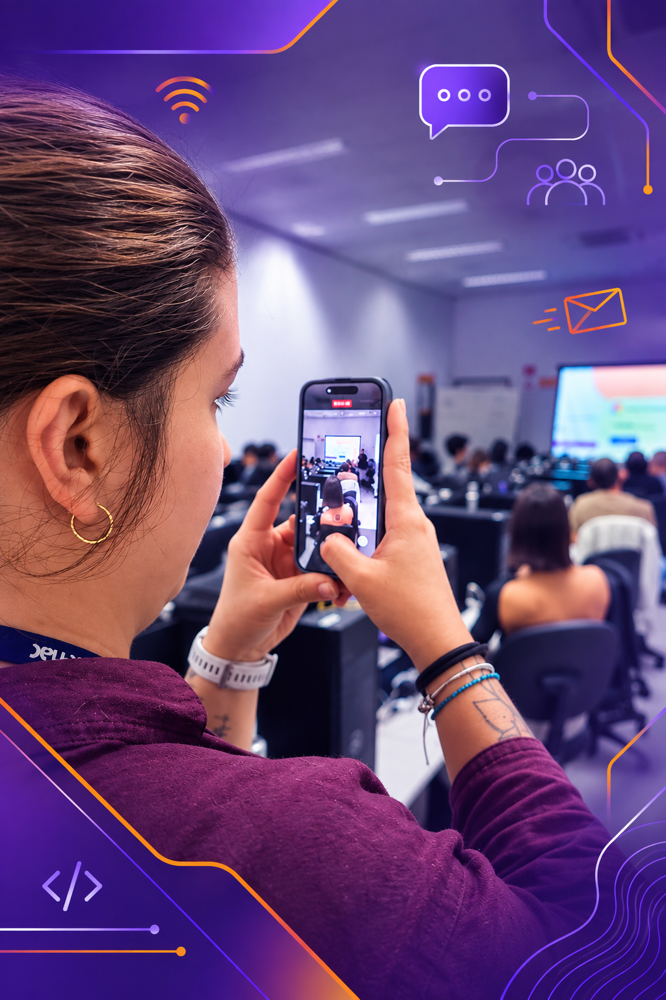

O ElasTitam tem como objetivo incluir mais mulheres na área da tecnologia, desenvolvendo pensamento computacional por meio de competências socioemocionais, soft skills e hard skills.
Queremos empoderar mulheres protagonizando suas próprias conquistas, elevando o conhecimento técnico, a autoestima, a capacidade de liderança e o empreendedorismo.
Nosso público-alvo são todas as mulheres interessadas em tecnologia e no empoderamento feminino.
.gif)
![Arte de divulgação da oficina “Inteligência Artificial”. A imagem mostra uma mulher adulta sorrindo, em destaque à direita, segurando um microfone, em um ambiente que remete a aprendizado e tecnologia, com elementos visuais de inteligência artificial, dados e gráficos ao fundo. O cartaz informa a data 22/09/2026, no horário das 14h às 16h, e identifica a instrutora como Elizangela Frazão. O objetivo da oficina é apresentar conceitos básicos de inteligência artificial e suas aplicações no mercado de trabalho e na sociedade. Os conteúdos abordados incluem machine learning e inteligência artificial generativa, aplicações reais e impactos sociais e profissionais. Na parte inferior, aparecem os ícones dos Objetivos de Desenvolvimento Sustentável ODS 4 (Educação de Qualidade) e ODS 9 (Indústria, Inovação e Infraestrutura).](img_elastitam/oficina_Inteligencia_1426.png)
Instrutora: Elizangela Frazão
22 de setembro de 2026Horário: 14h às 16h
Local: SENAC Lapa Tito
Evento presencial e gratuito! (não precisa estar matriculado no SENAC.)
![Arte de divulgação da oficina “Experiência do Usuário – Tecnologia a Serviço das Pessoas”. A imagem mostra uma mulher adulta sorrindo, sentada à mesa, segurando um post-it amarelo com o desenho de uma lâmpada, em um ambiente de trabalho colaborativo com quadros, wireframes, post-its e materiais de UX ao fundo. O cartaz informa a data 23/10/2026, no horário das 19h às 21h, e identifica a instrutora como Fernanda Nalon. O objetivo da oficina é ensinar fundamentos de experiência do usuário com foco em acessibilidade, inclusão e empatia. Os conteúdos abordados incluem o que é UX, pesquisa com usuários, acessibilidade digital e design centrado nas pessoas. Na parte inferior, aparecem os ícones dos Objetivos de Desenvolvimento Sustentável ODS 9 (Indústria, Inovação e Infraestrutura) e ODS 10 (Redução das Desigualdades).](img_elastitam/oficina_Ux_0526.png)
Instrutora: Fernanda Nalon
23 de outubro de 2026Horário: 19h às 21h
Local: SENAC Lapa Tito
Evento presencial e gratuito! (não precisa estar matriculado no SENAC.)
![Arte de divulgação da oficina “Segurança da Informação e Proteção de Dados”. A imagem mostra uma mulher jovem sorrindo, em destaque à direita, segurando um tablet com o símbolo de um cadeado, em um ambiente que remete à segurança digital, com computador, telas de login e ícones de proteção de dados ao fundo. O cartaz informa a data 12/11/2026, no horário das 19h às 21h, e identifica a instrutora como Amanda Cristina. O objetivo da oficina é conscientizar sobre a importância da segurança digital e da proteção de dados pessoais e corporativos. Os conteúdos abordados incluem conceitos básicos de segurança, LGPD, boas práticas no dia a dia e carreiras em cibersegurança. Na lateral da imagem, aparecem os ícones dos Objetivos de Desenvolvimento Sustentável ODS 9 (Indústria, Inovação e Infraestrutura) e ODS 16 (Paz, Justiça e Instituições Eficazes).](img_elastitam/oficina_seguranaInfo_0426.png)
Instrutora: Amanda Cristina
12 de novembro de 2026Horário: 19h às 21h
Local: SENAC Lapa Tito
Evento presencial e gratuito! (não precisa estar matriculado no SENAC.)
"Participar do ElasTitam mudou minha perspectiva sobre trabalhar com tecnologia. Encontrei apoio, inspiração e amizades que me ajudaram a continuar."

Docente dos cursos de desenvolvimento
"Como fundadora, o projeto me deu ferramentas para ajudar outras mulheres e criar uma rede de apoio que faz toda a diferença na permanência delas no curso."

Fundadora do ElasTitam
"Esse projeto não somente promove o encontro de mulheres amantes da tecnologia... Também promove desenvolvimento técnico, socioemocional, troca de ideias, conhecimentos, sororidade! Somos uma só, uma família, com uma paixão em comum (ou várias)."
Docente dos cursos de desenvolvimento
Cadastre-se e receba novidades sobre nossas atividades, oficinas e conteúdos exclusivos para impulsionar sua jornada na tecnologia.
Receba novidades
e convites
Fique por dentro
das novidades
Conecte-se com
mulheres incríveis
